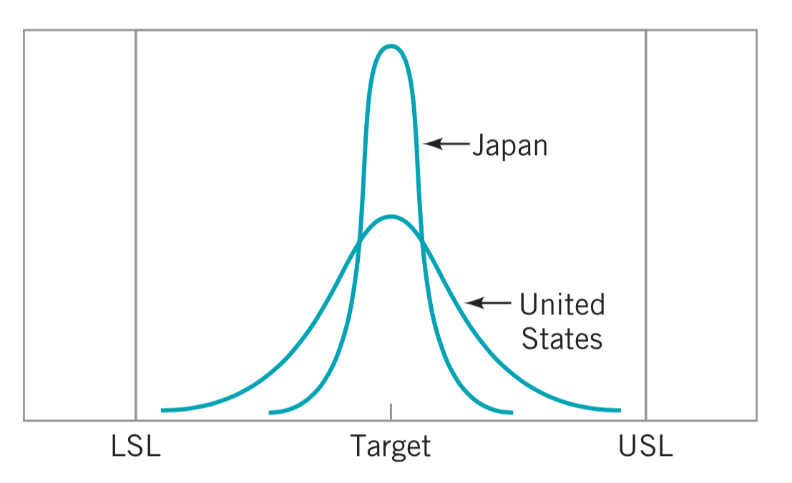
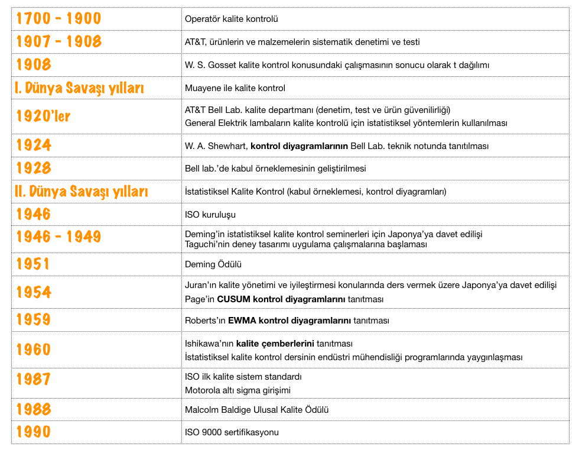
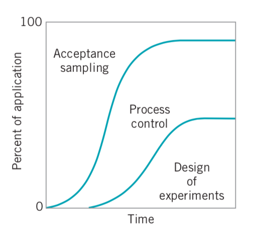
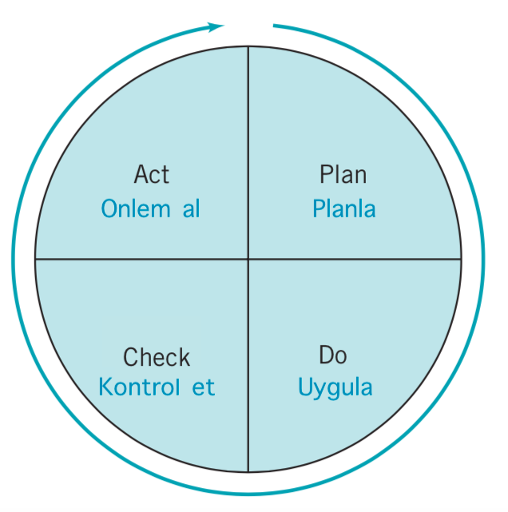
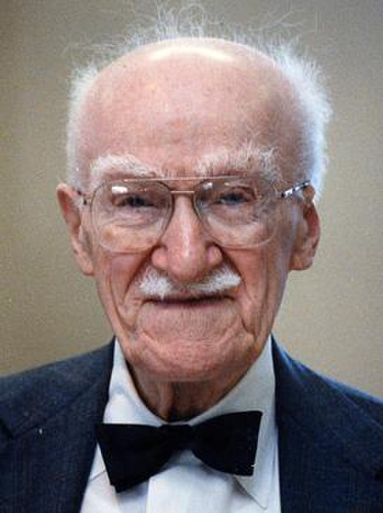
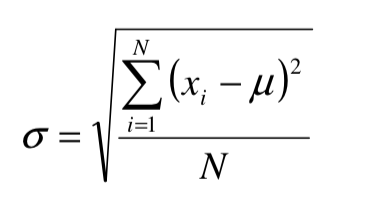
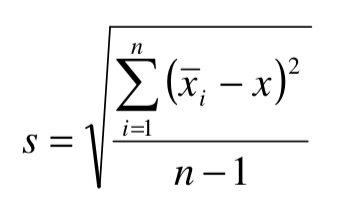
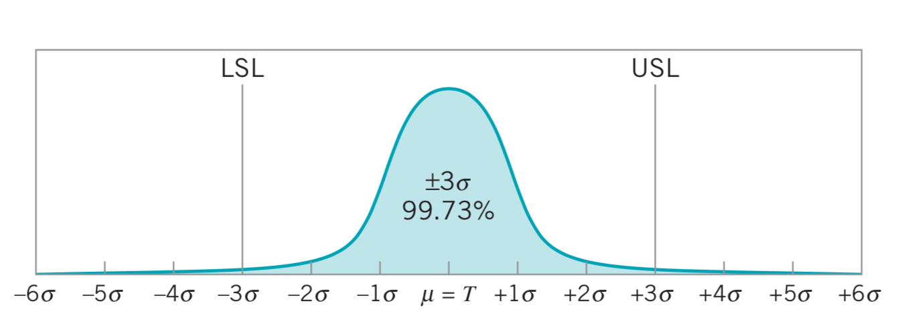
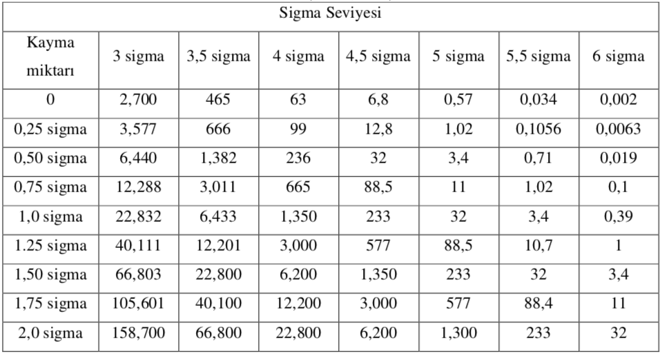
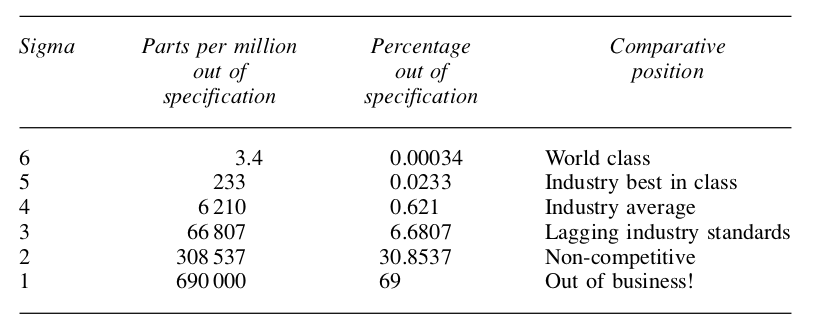

Bölüm 4 Kalite Yönetimi Temel Kavramları
4.1 Kalite Kavramı
Kalite tanımı birçok farklı şekilde yapılabilir. Kalitenin sözlük anlamı mükemmeliyet derecesi olmakla birlikte, ürün/hizmette mevcut olması istenen özellik veya özellikler, kalite tanımı için başlangıç noktası olarak seçilebilir. Kalitenin çok boyutlu ve doğası gereği göreceli yapısı ortak bir tanımdan ziyade farklı bakış açılarıyla geliştirilmiş kalite tanımlarını ortaya çıkarmıştır. Amerikan Kalite Derneği (ASQ); kaliteyi farklı tanımlamaların yapılabileceği öznel bir terim olarak tanımlamıştır.
- Kalite, gereksinimlere uygunluktur. (Crosby)
- Kalite, kullanıma uygunluktur. (Juran)
- Kalite, müşterinin şimdiki ve gelecekteki ihtiyaçlarını hedeflemektir. (Deming)
- Kalite, müşteri beklentilerini karşılayacak ürün ve hizmetin pazarlama, mühendislik, imalat ve bakım aşamalarındaki karakteristiklerinin toplamıdır. (Feigenbaum)
- Kalite, özellikleri ve gereksinimleri yerine getirme derecesidir. (ISO 9000)
- Kalite, mal ve hizmetlerde, özellikle gereksinimlere uydukları ve müşterileri tatmin ettikleri ölçüde mükemmelliği ifade eder. (ASQ)
Kalite değişkenlikle (variability) ters orantılıdır. Ürün/hizmetin önemli karakteristiklerindeki değişkenliğin azaltılması kaliteyi arttıracaktır.
Değişkenliğin kalite kontrol açısından önemini kavramak açısından bir örnek verelim. Amerika Birleşik Devletleri’ndeki bir otomobil şirketi, şanzıman üretimlerini hem yerli bir tesiste hem de Japon bir tedarikçi aracılığıyla gerçekleştirmektedir.
Garanti taleplerinin ve onarım maliyetlerinin analizi, sütun grafikte gösterilmiştir, Japon üretimi şanzımanın çok daha düşük maliyetlere sahip olmasıyla, iki üretim kaynağı arasında çarpıcı bir fark olduğu görülmektedir. Maliyet ve performanstaki bu farkın nedenini keşfetme çalışmasının bir parçası olarak, şirket her tesisten rastgele örnekler seçmiş, bunları parçalara ayırmış ve birkaç kritik kalite özelliğini ölçmüştür.

Kritik boyutların her iki dağılımı da hedef değerde ortalanmıştır. Bununla birlikte, Amerika Birleşik Devletleri’nde üretilen şanzımanlar için kritik özelliklerin dağılımı, spesifikasyonların genişliğinin yaklaşık% 75’ini kaplar ve bu da çok az sayıda uygun olmayan birimin üretileceğini gösterir. Aslında tesis, şirket içinde genel kabul görmüş kalite anlayışına göre oldukça iyi bir kalite seviyesinde üretim yapmaktadır. Buna karşılık, Japon fabrikası aynı kritik özelliklerin spesifikasyon bandının sadece yaklaşık% 25’ini kapladığı aktarımlar üretmiştir. Sonuç olarak, Japon yapımı şanzımanların kritik kalite özelliklerinde Amerika Birleşik Devletleri’nde üretilenlere kıyasla önemli ölçüde daha az değişkenlik mevcuttur.

Akla gelen ilk soru Japonlar bunu nasıl yaptı? Burada azalan değişkenlik, doğrudan daha düşük maliyetlere dönüşmüştür. Dahası, Japon yapımı şanzımanlar daha sorunsuz vites değiştirmiş, daha sessiz çalışmış ve genellikle müşteri tarafından yurt içinde üretilenlerden daha üstün olarak algılanmıştır. Daha az onarım ve garanti talebi, daha az yeniden çalışma ve boşa harcanan zaman, çaba ve paranın azaltılması anlamına gelmektedir. Dolayısıyla, kalite gerçekten değişkenlikle ters orantılıdır. Dahası maliyetle yakından ilişkilidir.
Japonlar bunu nasıl yaptı? Cevap, kalite kontrolün sistematik ve etkili kullanımında yatmaktadır.
Kalite, rakip ürün/hizmetlerin seçiminde en önemli tüketici karar faktörlerinden biri haline gelmiştir. Bu görüş, tüketicinin bir birey, bir endüstriyel kuruluş, bir perakende mağazası, bir banka veya finans kurumu veya bir askeri savunma programı olmasına bakılmaksızın yaygındır. Sonuç olarak, kaliteyi anlamak ve iyileştirmek, iş başarısı, büyüme ve rekabet gücü açısından önemlidir. Bu bakımdan kalitenin iyileştirilmesi ve genel iş stratejisinin ayrılmaz bir parçası haline getirilmesi başarının temel gereklerindendir.
Kalite terminolojisinde ürün (product) hem ürün hem de hizmet anlamında kullanılmaktdır.
Kalite iyileştirme (quality improvement): Proses ve ürünler açısından değişkenliğin azaltılması olarak tanımlanmaktadır. Fazla miktarda değişkenlik performansta kayıba (waste) neden olmaktadır, para kaybı, zaman kaybı veya enerji kaybı örnek olarak verilebilir. Kalite iyileştirmenin bir diğer tanımı da kaybın azaltılması (reduction of waste) olarak yapılabilir.
4.2 Kalite Boyutları
Kalitenin çok boyutlu yapısı farklı kalite tanımlarının ortaya çıkmasına neden olmuştur. Garvin (1987), kalitenin sekiz boyutunu şöyle tanımlamaktadır.
1. Performans: Temel ürün özellikleri
2. Güvenilirlik: Kullanım ömrü içerisindeki performans tutarlılığı
3. Dayanıklılık: Yararlı kullanım ömrü
4. Hizmet: Kullanım ömrü içerisinde problem ve şikayetlerin çözümü
5. Estetik: Duyulara seslenebilme özelliği
6. Özellikler: Öne çıkmayı sağlayan ikincil karakteristikler
7. İtibar: Geçmiş performans ve algılanan kalite
8. Uygunluk: Endüstri standartlarına uygunluk
Kalite çalışmalarında tüm boyutlar dikkate alınmalıdır.4.3 Kalite Mühendislik Terminolojisi
Her ürün, kullanıcının veya tüketicinin kalite göstergesi olarak tanımladığı bir takım unsurlara sahiptir. Bu unsurlara genellikle kalite karakteristikleri denir. Aynı zamanda kalite için kritik (critical to quality (CTQ)) karakteristikler olarak da tanımlanmaktadır. Kalite karakteristikleri birkaç türde olabilir:
Fiziksel: uzunluk, ağırlık, voltaj, viskozite
Duyusal: tat, görünüş, renk
Zamansal: güvenilirlik, dayanıklılık, hizmet
Kalite karakteristikleri doğrudan ya da dolaylı olarak kalite boyutlarını etkilemektedir.
Kalite mühendisliği, bir şirketin bir ürünün kalite özelliklerinin gerekli seviyelerde olmasını ve bu istenen seviyeler etrafındaki değişkenliğin minimum olmasını sağlamak için kullandığı operasyonel, yönetimsel ve mühendislik faaliyetleridir.
Çoğu kuruluş, müşteriye her zaman aynı olan veya müşteri beklentilerini karşılayan seviyelerde kalite karakteristiklerine sahip ürünler sağlamayı zor (ve pahalı) bulur. Bunun başlıca nedeni değişkenliktir. Her üründe belli bir miktar değişkenlik vardır; sonuç olarak, iki ürün hiçbir zaman özdeş değildir. Örneğin, bir jet türbin motoru pervanesi üzerindeki kanatların kalınlığı, aynı pervane üzerinde bile aynı değildir. Kanat kalınlığı da pervaneler arasında farklılık gösterecektir. Bıçak kalınlığındaki bu değişiklik küçükse, müşteri üzerinde hiçbir etkisi olmayabilir. Ancak, varyasyon büyükse, müşteri üniteyi istenmeyen ve kabul edilemez olarak algılayabilir. Bu değişkenliğin kaynakları, malzemelerdeki farklılıkları, üretim ekipmanının performans ve işletimindeki farklılıkları ve operatörlerin görevlerini yerine getirme biçimlerindeki farklılıkları içerir. Kalite iyileştirme bu noktada önemli yere sahiptir.
Değişkenlik yalnızca istatistiksel terimlerle tanımlanabildiğinden, istatistiksel yöntemler kalite iyileştirme çabalarında merkezi bir rol oynar. İstatistiksel yöntemlerin kalite mühendisliğine uygulanmasında, kalite karakteristiklerine ilişkin veriler niceliksel (variables) veya niteliksel (attributes) veriler olarak sınıflandırılmaktadır.
Kalite özellikleri genellikle spesifikasyonlara göre değerlendirilir. Üretilen bir ürün için spesifikasyonlar (specifications), ürünün alt parçaları ve nihai ürünün kalite özellikleri için istenen değerlerdir. Örneğin, bir otomobil şanzımanında kullanılan bir şaftın çapı çok büyük veya çok küçük olamaz, gerekli boyutta olmalıdır, aksi taktirde arızaya neden olacaktır.
Kalite karakteristikleri için istenen değer nominal veya hedef değer (target value) olarak tanımlanmaktadır. Bu hedef değerler genellikle bir aralıkla sınırlandırılır, bu yapıda en büyük değer; üst sınır (upper specification limit (USL)) ve en küçük değer; alt sınır (lower specification limit (LSL)) olarak adlandırılır. Bazı kalite karakteristiklerinin spesifikasyon limitleri tek taraflı olabilir. Spesifikasyon sınırları genellikle tasarım mühendisleri tarafından belirlenir.
4.4 Toplam Kalite Yönetiminin Tarihsel Gelişimi

Önemli zaman dilimlerinin detaylandırıldığı tarihsel gelişimi temel aşamaları ile altı ana başlık altında toplamak mümkündür.
1. Operatör kalite kontrolü
2. Ustabaşı kalite kontrolü
3. Muayene ile kalite kontrol
4. İstatistiksel kalite kontrol
5. Toplam kalite kontrol
6. Toplam kalite yönetimi
Rekabetçi ortamda çağdaş kalite politikası oluşturulması ve geliştirilmesi önem arz etmektedir, müşteri fiyat-kalite ikileminde tercih yapmak durumunda bırakılmamalıdır.
4.5 Kalite Kontrol ve İyileştirme için İstatistiksel Yöntemler
İstatistiksel proses kontrol (SPC): Proses kısaca girdiler ve çıktıdan oluşan bir sistem olarak tanımlanabilir. Kontrol diyagramları istatistiksel proses kontrol için temel yöntemlerden biridir.
Deney tasarımı: İstatistiksel olarak tasarlanmış deneyler, kalite karakteristiklerindeki değişkenliği azaltmada ve proses performansını optimize eden kontrol edilebilir değişkenlerin seviyelerini belirlemede oldukça önemlidir. Genellikle proses performansı ve ürün kalitesindeki önemli gelişmeler de tasarlanmış deneylerin kullanılmasından kaynaklanır.

- Kabul örneklemesi: Kalite kontrolünün en eski yönlerinden biridir ve kalite iyileştirme için istatistiksel metodolojinin geliştirilmesinden çok öncesine dayanmaktadır. Örnekleme çeşitli aşamalarda gerçekleştirilebilir. Modern kalite güvence sistemleri genellikle kabul örneklemesine daha az vurgu yapmakta, istatistiksel proses kontrol ve deney tasarımına odaklanmaktadır. Kabul örneklemesi, kalitenin spesifikasyona uygunluk görüşünü pekiştirme eğilimindedir.
Kalite mühendisliği çabalarının temel amacı, ürünün temel kalite özelliklerindeki değişkenliğin sistematik olarak azaltılmasıdır.
 
4.6 Kalite İyileştirmede Yönetim Cephesi
SPC ve deney tasarımı dahil istatistiksel teknikler ve diğer problem çözme araçları kalite kontrol ve iyileştirmenin teknik temelini oluşturur. Ancak, en etkin kullanım, bu tekniklerin kalite iyileştirmeye odaklanan bir yönetim sistemi içinde uygulanmasıyla mümkündür. Bir kuruluşun yönetim sistemi, genel kalite iyileştirme felsefesini doğru bir şekilde yönlendirmek ve işletmenin tüm yönlerine yayılmasını sağlamak için organize edilmelidir. Kalitenin etkin yönetimi için üç faaliyetin başarılı bir şekilde yürütülmesi gerekir: kalite planlama, kalite güvencesi ve kalite kontrolü ve iyileştirme.
Kalite planlama: Kalite planlama stratejik bir faaliyettir ve bir kuruluşun uzun vadeli iş başarısı için ürün geliştirme planı, finansal plan, pazarlama planı ve insan kaynaklarının kullanımına yönelik planlar kadar önemlidir. Stratejik bir kalite planı olmadan, hatalı tasarımlar, üretim hataları, saha arızaları ve müşteri şikayetleri oluşacak ve muazzam miktarda zaman, para ve çaba boşa harcanacaktır. Kalite planlaması, müşterilerin tanımlanmasını ve ihtiyaçlarını tanımlamayı içerir (buna bazen müşterinin sesini dinleme (voice of the customer (VOC)) denir). Daha sonra müşteri beklentilerini karşılayan veya aşan ürün veya hizmetler geliştirilmelidir. Kalitenin sekiz boyutu bu çabanın önemli bir parçasıdır. Kuruluş daha sonra bu ürün ve hizmetlerin nasıl gerçekleştirileceğini belirlemelidir. Belirli, sistematik bir temelde kalite iyileştirme planlaması da bu sürecin önemli bir parçasıdır.
Kalite güvencesi: Ürün ve hizmetlerin kalite seviyelerinin uygun şekilde sürdürülmesini ve tedarikçi ve müşteri kalite sorunlarının uygun şekilde çözülmesini sağlayan faaliyetler bütünüdür.
Kalite kontrol ve iyileştirme: Kalite kontrol ve iyileştirme, ürün ve hizmetlerin gereksinimleri karşılamasını ve sürekli olarak iyileştirilmesini sağlamak için kullanılan faaliyetler dizisini içerir. Değişkenlik genellikle düşük kalitenin ana kaynağı olduğundan, SPC ve deney tasarımı dahil istatistiksel teknikler, kalite kontrol ve iyileştirmenin ana araçlarıdır. Kalite iyileştirme genellikle proje bazında yapılır ve istatistiksel yöntemlerle ilgili özel bilgiye ve bunların uygulanmasında deneyime sahip personel tarafından yönetilen ekipleri içerir.
4.7 Kalite Yönetimi Liderleri
Kaliteyi iyileştirmenin istatistiksel metodolojisine birçok kişi katkıda bulunmuştur ancak uygulama ve yönetim felsefesi açısından önemli katkıları bulunan bilim insanları üzerinde durulacaktır.
- Walter Shewhart
- W. E. Deming
- J. M. Juran
- A. V. Feigenbaum
- Philip Crosby
- Kaoru Ishikawa
- Genichi Taguchi
4.7.1 Walter Shewhart
Walter Andrew Shewhart Amerikalı bir fizikçi, mühendis ve istatistikçidir. İstatistiksel kalite kontrolün babası olarak bilinir. Kontrol diyagramlarını ilk olarak kullanan kişidir. Kontrol diyagramlarının kullanımı genellikle istatistiksel kalite kontrolün resmi başlangıcı olarak kabul edilmektedir.
4.7.2 W. Edwards Deming

W. Edwards Deming, Wyoming Üniversitesi ve Yale Üniversitesi’nde mühendislik ve fizik eğitimi almıştır. Western Electric için çalışmış ve kontrol şemasının (control charts) geliştiricisi Walter A. Shewhart’tan büyük ölçüde etkilenmiştir.
İkinci Dünya Savaşı ardından, Japon endüstrilerine danışmanlık görevinde bulunmuş, istatistiksel yöntemlerin gücü ve kalitenin rekabetçi bir silah olarak kullanımı konularında yöneticilerini ikna etmiştir.İstatistiksel yöntemlere olan bu bağlılık ve kullanım, Japonya endüstrisinin ve ekonomisinin genişlemesinde kilit bir unsur olmuştur.
Japon Bilim Adamları ve Mühendisler Birliği, onuruna kalite iyileştirme için Deming Ödülü’nü yaratmıştır.
Deming, Shewhart’ın bilimsel çıkarımları etrafında bazı metodolojik önerilerini geliştirdi ve sentezini Shewhart döngüsü (Shewhart (PDCA) cycle) olarak adlandırdı. PDCA döngüsü tüm proseslere uygulanabilir. Döngü iteratif olup karmaşık problemler için çok sayıda döngü gerekebilir.

(P) Planla: Müşteri talebi ve kuruluş politikasına uyumlu sonuçların elde edilebilmesi için gereken objektif hedef ve proseslerin tasarlanması
(D) Uygula: Proseslerin uygulanması
(C) Kontrol et: Proseslerin ve ürünün belirlenen politika, şart ve hedeflere uygunluğunun incelenmesi ve raporlanması
(A) Önlem al: Performansın iyileştirilmesi için gereken önlemlerin alınması
Kalite yönetimi için 14 ilke belirlemiştir;
Ürün/hizmetlerin iyileştirilmesine odaklanan bir amaç sürekliliği yaratın
Yeni felsefeyi benimseyin
Muayene kavramını anlayın.
Fiyat bazlı olmayan, performans odaklı uzun dönemli bağlantı hedefleyin.
İstatistiksel yöntemlerden yararlanarak sürekli iyileştirmeye odaklanın.
Eğitime önem verin ve modern eğitim yöntemlerini takip edin.
Liderliği geliştirin.
Korkuyu ortadan kaldırın.
Engelleri kaldırın, ekip çalışmasına teşvik edin.
Çalışanlara yönelik ikazları ortadan kaldırın.
Sayısal kotaları ve çalışma standartlarını ortadan kaldırın, gelişimi hedefleyin.
Çalışanları çalışanları dinleyin ve engelleri kaldırın.
Çalışanların gelişimini önemseyin ve destekleyin.
Sürekli iyileştirmeyi ortak hedef haline getirin.
Belirtilen 14 Madde’yi Deming’den dinlemek de mümkün; The 14 Points
Deming’in 14 maddesini okurken, organizasyonel değişime güçlü bir vurgu yapıldığı fark edilmaktedir. Ayrıca, bu değişim sürecine rehberlik etmede yönetimin rolü büyük önem taşımaktadır. Ancak nelerin değişmesi gerekiyor ve bu değişim süreci nasıl başlatılmalı? Bu noktada istatistiksel yöntemler devreye girmektedir.
Deming’in tanımladığı yönetimdeki 7 ölümcül hastalık nedir araştırınız.
4.7.3 Joseph M. Juran

Joseph M. Juran Minnesota Üniversitesi Elektrik Mühendisliği Bölümü’nden mezun olmuştur. William Edwards Deming gibi o da gerek ABD’de gerek Japonya’da toplam kalite yönetiminin yaygınlaşmasında çok önemli rol oynamıştır. 1981 yılında Japon İmparatoru, Hirohito tarafından Order of Sacred Treasure ile ödüllendirilmiştir.
Juran, toplam kalite yönetimi alanında çok önemli eserler yayınlamıştır. Juran’ın Kalite Kontrol El Kitabı (Juran’s Quality Control Handbook) adlı çalışması toplam kalite yönetimi alanında klasik ve en önemli eserlerden birisi olarak kabul edilmektedir.
Kalite yönetimi için planlama, kontrol ve iyileştirme adımlarından oluşan Juran üçlemesini (Juran Trilogy) geliştirmiştir.
Juran üçlemesi (Juran Trilogy)
Planlama: Harici müşterilerin tanımlanması ve ihtiyaçların belirlenmesi, düzenli kalite iyileştirme planlaması
Kontrol: Ürünün veya hizmetin gereksinimleri karşıladığından emin olmak için işletmenin işletme güçleri tarafından incelenmesi. SPC, kontrolün birincil araçlarından biridir.
İyileştirme: Mevcut seviyeden daha yüksek performans ve kalite seviyelerine ulaşma hedefi. Juran, iyileştirmenin proje bazında olması gerektiğini vurgulamaktadır. Bu projeler tipik olarak üçlemenin planlama aşamasında belirlenmelidir.
4.7.4 Armand V. Feigenbaum

Armand V. Feigenbaum, Lisans eğitimini Union College’de, Yüksek Lisans ve Doktora Eğitimini ise MIT (Massachusetts Institute of Technology)’de tamamlamıştır. 1961 – 1963 yılları arasında Amerikan Kalite Topluluğu’na (American Society for Quality) başkanlık etmiştir.
Daha sonra Toplam Kalite Yönetimi olarak anılacak Toplam Kalite Kontrol kavramının yaratıcısıdır. Şirket çapında kalite kontrol kavramını ilk kez kitabı Toplam Kalite Kontrolü’nde tanıtmıştır. Bu kitap, 1950’lerin başlarında Japonya’daki erken kalite yönetimi felsefesinin etkilemiştir. Birçok Japon şirketi “toplam kalite kontrol” terimini kullanmıştır. Kaliteyi iyileştirmek için üç aşamalı bir yaklaşım önermiştir: kalite liderliği, kalite teknolojisi ve örgütsel bağlılık.
Deming, Juran ve Feigenbaum bu öncülerin üçü de
- kalitenin temel bir rekabet silahı olarak önemini,
- kalite iyileştirmenin uygulanmasında yönetimin oynaması gereken önemli rolü
- organizasyonun “kalite dönüşümünde” istatistiksel yöntem ve tekniklerin önemini
vurgulamaktadır.
4.7.5 Philip Crosby
Philip B. Crosby, kalite uzmanıdır ve sıfır hata görüşü ile tanınmaktadır. Crosby’ye göre kalite, yerine göre kullanımdır ve gereksiz kullanım maliyetiyle değerlendirilir. Crosby kalitenin yaklaşımını mutlak 4 esas ile açıklamıştır;
Kalite mükemmellik olarak değil gereksinimlere uygunluk olarak tanımlanır.
Kalite değerleme ile değil önleme ile başarılır.
Standart performans sıfır hatadır.
Kalite maliyet ile ölçülür.
4.7.6 Kaoru Ishikawa
Kaoru Ishikawa, Japonya’da toplam kalite yönetimine katkıda bulunan liderlerin başında gelmektedir. İkinci dünya savaşı sonrasında ABD’de Deming ve Juran ile tanışmıştır. Ishikawa, kalite kontrol alanındaki çalışmaları ile Japonya’da kalite bilincinin yaygınlaşmasında önemli rol oynamıştır.
4.7.7 Genichi Taguchi
Genichi Taguchi, mühendis ve istatistikçidir. Varyasyonun azaltılması ve performans sürekliliğine odaklanmıştır. Ayrıca Taguchi tarafından önerilen kalite kayıp fonksiyonu kalite yönetim literatüründe önemli yere sahiptir.
4.8 Toplam Kalite Yönetimi
Toplam Kalite Yönetimi (TQM), organizasyon temelinde kalite iyileştirme aktivitelerinin uygulanması ve yönetilmesini kapsayan bir stratejidir.
Geleneksel yönetim yaklaşımına odaklanan işletmelerde gelişme reaktif tarzdadır. Bu yapıda müşteri şikayeti durumunda hatanın düzeltilmesi, tekrar üretim ve satış döngüsü gerçekleşir. Hataları düzeltme yerine önleme yaklaşımını içeren proaktif gelişme modeli ise toplam kalite yönetiminin temelini oluşturmaktadır. Hatalar oluşmadan ve müşteriye ulaşmadan önleme hedefindedir.
Tüketici isteklerini en ekonomik şekilde karşılamak hedefiyle işletme organizasyonu içerisindeki çeşitli birimlerin; kalitenin yaratılması, yaşatılması ve geliştirilmesi yolundaki çabalarını bir araya getirip düzenlenmesini sağlayan etkili sistem toplam kalite kontrol olarak tanımlanır.
4.9 Kalite Sistemleri ve Standartları
ISO (International Organization for Standardization), Uluslararası Standartlar Teşkilâtı, Uluslararası Elektroteknik Komisyonu’nun çalışma sahasına giren elektrik ve elektronik mühendisliği konuları dışında, bütün teknik ve teknik dışı dallardaki standartların belirlenmesi çalışmalarını yürütmek amacıyla 1947 yılında Cenevre’de kurulmuştur.
Uluslararası Standartlar Teşkilâtına üye ülkelerin sayısı 165’dir.
Teknolojik ihtiyaçlardan dolayı ISO standartları, her beş yılda bir gözden geçirilir ve gerekli değişiklikler yapılır.
Çoğu zaman ISO standard kodlarıyla ISO kalite belgesi anlamsal olarak karıştırılmakta ve anlam karmaşasına neden olabilmektedir. Uluslararası standartlar organizasyonu ISO 9001 ve ISO 14001 gibi Uluslararası Standartları geliştirmekte, ancak belgelendirme yapmamakta ve ISO kalite belgesi vermemektedir. Belgelendirme işlemleri, akredite belgelendirme kuruluşları tarafından gerçekleştirilmektedir.
ISO kısaltmasının yanında yer alan rakam standardın kodu ve sondaki yıl bilgisi içeren diğer rakamsa, ilgili standardın son revizyonuna ait yılı göstermektedir. Örnek: ISO 9001:2015, ISO 22000:2016 vb.


4.10 ISO 9000 Kalite Standartları
ISO 9000 Kalite Sistem Standartları Mart 1987’de yayınlanmış ve birçok ülke tarafından benimsenerek uygulamaya geçilmiştir. ISO 9000 İmalat ve Hizmet endüstrilerinde kalite güvencesi için kurulmuş, kapsamlı bir standartlar kümesidir. ISO 9000 serileri, bir firmanın kalite sistemini geliştirmesini, belgelemesini ve çalıştırılmasını ister, yani firma içinde yönetiminin kalite tetkik uygulamaları için sahip olduğu sorumluluktan, satın alma politikalarından, eğitime kadar uzanan Kalite yönetim sistemleri uygulamalarının tümünü kapsar.
170’den fazla ülkede ISO 9001 sertifikalı bir milyonun üzerinde şirket ve kuruluş bulunmaktadır.
Standardın Amacı
- Kalite yönetimi için genel bir çerçeve sağlaması,
- Kuruluşlar arasında güven ortamı yaratması,
- Proseslerin yönetilmesiyle ürün/hizmet kalitesinin sağlanması, devam ettirilmesi ve iyileştirilmesi,
- Müşteriye ürün ve hizmetlerin tutarlılığının güveninin verilmesidir.
Sağladığı yararlar
- Çalışanların kalite bilincinde artış sağlanması
- İşletmenin piyasa itibarında artış sağlanması (prestij)
- Pazarlama faaliyetlerinde rakiplerden farklılık sağlanması
- İşletmenin uluslararası geçerliliğe sahip bir kalite belgesi edinmesinin getirdiği ticari avantajlardan yararlanabilme (ihracat için kalitenin belge ile ispatlanabilmesi)
- Müşteri memnuniyetinde ve müşteri sadakatinde artış sağlanması
- Hata oranlarında, firelerde, yeniden işlemelerde azalma sağlanması
- Girdi, üretim ve son kontrollerin etkin olarak yapılabilmesi
- Tedarikçilerin seçiminde, değerlendirilmesinde ve takibinde kolaylık sağlanması
- İşletme içi yetki ve sorumlulukların tespitinde ve dağıtılmasında kolaylık sağlanması
- İşletme faaliyetlerinin standartlaştırılmasını sağlayacak dokümantasyonun (alt yapının) oluşturulması
- Geçmişe yönelik kayıtların düzenli bir şekilde tutulmasını sağlayacak altyapının oluşturulması
- Veriler ve istatistiksel ölçümler doğrultusunda durum analizlerinin yapılabilmesi ve geleceğe yönelik kararlarda bu analiz sonuçlarının kullanılabilmesi
- Kurumsallaşma yolunda önemli bir adım atılmış olması
ISO 9000 Belgesi almak yeterli mi?
ISO 9000 uygulama sürecinde yapılabilecek en önemli yanlışlık belgenin alınması ile bu sürecin sona erdiğini düşünmektir. ISO 9000 Kalite Sistem Belgesi yeter mi? sorusuna verilecek yanıt hayırdır. Çünkü IS0 9000 uygulama süreci kuruluşun kalite yönetim sisteminin gelişme ihtiyacına göre paralel olarak süreklilik arz eder. Bu nedenle Kalite yönetim sistemleri nin sürekli gelişme anlayışına uygun olarak ve müşterilerin değişen talep ve beklentilerine cevap verecek şekilde daha üst bir performans düzeyine çıkarılması için çaba sarf edilmelidir. Kalite yönetim sistemlerinin evrim sürecinde uzun vadede benimsenmesi gereken hedef sürekli mükemmellik anlayışı ile Toplam Kalite Yönetimi stratejisini geliştirmek ve bunu kuruluşun bütününe uygulayabilmektir.

4.11 Malcolm Baldrige Ulusal Kalite Ödülü
Malcolm Baldrige Ulusal Kalite Ödülü (MBNQA) 1987 yılında ABD Kongresi tarafından oluşturulmuş kalite değerlendirme ve ödüllendirme sistemidir. Performans mükemmelliği için ABD kuruluşlarını tanımak için yıllık olarak verilmektedir. Kuruluşlara beş kategoride ödül verilmektedir: üretim, hizmet, küçük işletme, sağlık ve eğitim. Her kategoride her yıl üç ödül verilebilir. Birçok kuruluş ödüller için rekabet etmektedir ve birçok şirket, öz değerlendirme için performans mükemmelliği kriterlerini kullanmaktadır. Ödül, NIST (Ulusal Standartlar ve Teknoloji Bürosu) tarafından verilmektedir.
Değerlendirmenin 1000 puan üzerinden yapıldığı ödül sisteminde yedi farklı kategori bulunmaktadır ve her biri farklı puanlara dolayısıyla farklı ağırlıklara sahiptir.
Ödül Kategorileri
- Liderlik
- Stratejik Planlama
- Müşteri ve Piyasa Odağı
- Ölçme, Analiz ve Bilgi Yönetimi
- İnsan Kaynakları Odağı
- Süreç Yönetimi
- Sonuçlar

4.12 Altı Sigma
Motorola, ürünlerine olan talebe yanıt olarak 1980’lerin sonunda altı sigma (six sigma (6\(\sigma\))) yaklaşımını geliştirmiştir. Altı sigmanın odak noktası, ürün (kalite) özelliklerindeki değişkenliği azaltmak, başarısızlık veya kusurları minimum seviyeye indirmektir. Müşteri odaklı bir yöntem olan altı sigma, sorunun çözümü için müşterinin temel gereksinimlerine önem verir. Altı sigma, müşteri memnuniyetini arttıran, paralelinde rekabet gücünde artış sağlayan ve böylece karlılık getiren bir sistem olarak özetlenebilir. Motorola’nın 1988 yılında Malcolm Baldrige ödülünü kazanması ile daha da yaygınlaşmıştır.
Sıfır hatayı hedefleyen yöntem, doğru uygulandığında oldukça başarılı sonuçlar elde etmektedir. Altı sigma yaklaşımı bir milyon üründe (parts per million (ppm)) yalnızca 3.4’lük hata seviyesinde çalışmaktadır. Bu bakımdan mükemmeliyet hedefleyen firmalar için tercih edilen bir yaklaşımdır.
Sigma standart sapmanın simgesi, standart sapma da istatistiksel olarak yayılım ve değişkenlik ölçüsüdür.
 
Altı sigma yaklaşımında da hataları düzeltme yerine önleme yaklaşımını içeren proaktif gelişme modeli tercih edilmiştir. Problemlerin sonuçları yerine nedenleri üzerine odaklanma esastır.


## [1] 2700Motorola altı sigma konsepti, prosesdeki değişkenliği azaltmak için spesifikasyon sınırlarını ortalamadan en az altı standart sapma uzaklıkta olacak şekilde konumlandırmaktadır. Çalışmalar sonucunda uzun vadede spesifikasyon sınırları orta noktasından (-+)1.5\(\sigma\) kadar sapabildiği, dolayısıyla 6\(\sigma\) ile milyonda 3.4 kusurluya ulaşılabileceğini ortaya koymuştur.


Farklı kayma miktarlarına bağlı olarak sigma seviyeleri;

4.12.1 Neden 6\(\sigma\)
6\(\sigma\)’nın asıl hedefinin 3.4 ppm hata seviyesinde çalışmak olduğundan bahsetmiştik, %99.99966 hatasızlığa karşılık gelmektedir. Günlük yaşamdaki çok basit işlerde bile 6\(\sigma\)’nın ne kadar önemli yere sahip olduğunu bir örnekle açıklayalım.
Bir fast food restoranına gittiğinizi varsayalım. Hamburger (hamburger ekmeği, köfte, özel sos, peynir, turşu, soğan, marul ve domates), kızarmış patates ve içecek sipariş verdiniz. Siparişiniz (ürün) 10 birimden oluşuyor. %99 kalite sizi memnun eder mi? (10 birimin birbirinden bağımsız olduğu varsayılır)
Yemeğin iyi olma olasılığı;
P{Yemeğin iyi olması}=\((0.99)^{10}=0.9044\)
Yaklaşık %90 olasılıkla yemeğinizden memnun olacaksınız. Peki bu yemeği dört kişilik bir aile olarak yemiş olsaydınız memnuniyetiniz değişir miydi?
Tüm yemeklerin iyi olma olasılığı;
P{Tüm yemeklerin iyi olması}=\((0.9044)^{4}=0.6690\)
Tüm yemeklerin yalnızca 2/3’ü iyi olma ihtimaline sahip görünüyor. Memnuniyet seviyenizin düştüğü açık. Peki ailenizle birlikte her ay hamburger yemek için çıktığınızda durum ne olacak?
Bir yıldaki tüm yemeklerin iyi olma olasılığı;
P{Bir yıldaki tüm yemeklerin iyi olması}=\((0.6690)^{12}=0.0080\)
Memnuniyet açısından kabul edilemez bir olasılık! Görüldüğü üzere oldukça basit bir ürün için bile oldukça yüksek düzeyde kalite ve hizmete ihtiyaç vardır.
3\(\sigma\) seviyesinde üretim yapan bir çok şirket ürettiği her bir milyon parçada 66.000 kusurlu parça çıkmasından dolayı toplam gelirlerinin yaklaşık %25’ini kaybetmektedirler.
Gönderilen her 300.000 mektupta;
- 3\(\sigma\) ile 3000 kayıp
- 6\(\sigma\) ile 1 kayıp
Her hafta TV yayını;
- 3\(\sigma\) ile 1.68 saati bozuk yayın yapıyor.
- 6\(\sigma\) ile 1.8 saniye bozuk yayın yapıyor.
4.12.2 Sigma Kalite Seviyesi
Altı sigma yaklaşımı, kalite seviyelendirmesini sigma kalite seviyesi ölçütüne bağlı olarak değerlendirmektedir. Yaklaşımın isminden de anlaşılacağı üzere hedef, sigma kalite seviyesinin 6 olmasıdır. Bir milyonda 3.4 hata olması anlamına gelen 6 sigma kalite seviyesi aynı zamanda hatasız yüzdesinin %99.99966 olması anlamına gelmektedir. Her ne kadar %99 hatasız oranı kusursuza yakınmış gibi görünse de gerçek hayatta ne denli önemli olduğunu anlamak adına örnekler verelim;
- Bir saatte kaybolan 20.000 mektup
- Her hafta 5000 yanlış ameliyat gerçekleşmesi
- Her ay yaklaşık 7 saat elektrik kesintisi (6\(\sigma\) seviyesinde 8.8sn)
- Her yıl 200.000 adet yanlış reçete yazılması
Sistemdeki iyileşme, değişkenliğin azalması ile mümkündür, bu da istatistiksel olarak standart sapma yani sigmanın azalması anlamına gelir. İyileşme aynı zamanda ‘sigma kalite seviyesindeki’ artış olarak da tanımlanır, bu bakımdan ifadeleri karıştırmamak önemlidir.

Örn: Bir pastanenin 200 adet üretmiş olduğu pastanın 2 adedinin hatalı (yanık vs.) olması durumunda pasta üretim prosesinin sigma kalite seviyesini hesaplayınız.
P{Hatalı pasta üretme}=2/200=0.01 (%1)
P{Hatasız pasta üretme}=1-0.01=0.99
Z tablo değeri 2.33 olduğundan 2.33+1.5=3.83
Sigma seviyeleri arasında geçiş için harcanacak çaba üst seviyelerde giderek artmaktadır. Sigma seviyesinin 2’den 3’e çıkarılması için hata sayısında yaklaşık 4.6 katlık bir azalma gerekmektedir. Benzer şekilde 3’den 4’e çıkarmak için 10.7 katlık, 4’den 5’e çıkarmak için 26.7 katlık ve 5’den 6’ya çıkarmak için 68.5 katlık bir iyileştirme gerekmektedir.
4.12.3 Altı Sigma Proje Yönetimi
Altı sigma yaklaşımının uygulaması bu alanda uzmanlaşan kişiler tarafından gerçekleştirilmektedir. Uzmanlar, bilgi ve donanımlarına bağlı olarak; yeşil kuşak, kara kuşak, uzman kara kuşak, şampiyon ve liderlik konseyi olarak isimlendirilmektedir.

Yeşil kuşak (Green Belts (GBs)): Projelerde kısmi zamanlı çalışan kişilerdir. Sorumlulukları;
- Proje şampiyonu ile proje amacını tanımlamak
- Proje sürecinde takıma her türlü desteği sağlamak
- Proje süresince gerekli veri analizlerini gerçekleştirmek
- 6\(\sigma\) araçlarının kullanımı ile ilgili takımı bilgilendirmek
Kara kuşak (Black Belts (BBs)): İyileştirme takımının lideridir, ve şu özellikleri barındırır;
- Prosesi iyileştirme yeteneği
- Takım çalışmasına yatkın olma ve empati
- Müşteri odaklı düşünebilen
- 6\(\sigma\) araçlarını etkin kullanabilme
Kara kuşaklar 4 ay süreyle eğitim alırlar, aday olarak çalıştıkları projede başarılı olmaları durumunda uzman kara kuşak ünvanını almaya hak kazanırlar.
Uzman Kara kuşak (Master Black Belts (MBBs)): Proje sorumlusu olarak liderlik vasfı mevcuttur. Yöntem ve araçlara hakimdir, teknik danışman olarak da tanımlanabilir.
- Proje takımına istatistiksel yöntemler başta olmak üzere her konuda teknik destek sağlamak
- Şampiyonlara proje sürelerinin belirlenmesinde yardımcı olmak
- 6\(\sigma\) yöntemlerini uygulamak
- Yeşil ve Kara kuşaklara eğitim verme ve mentorluk yapmak
Şampiyon (Champion): Proje uygulama ve yürütme adımlarında aktif rol oynar, sponsorluk ve liderlik rolü bulunur.
- Projeyi belirlemek
- Proje takımı ve yönetim arasında köprü olmak
- Projeler için kaynak bulmak
- Proje takımını yönetim katında temsil etmek ve savunuculuğunu üstlenmek
- Yol gösterici olmak ve projeyi odak noktası haline getirmek
- Projede 6\(\sigma\) yöntemlerinin kullanılmasını sağlamak
Liderlik Konseyi (Leadership Team): 6\(\sigma\) başarısı için destek ve yönlendirmeyi sağlar. Sorumlulukları;
- 6\(\sigma\) yönetimini incelemek
- Projeler ve işletme hedefleri arasında ilişki kurmak
- Proje sürecini yakından takip etmek
Altı sigma uygulamaları 3 nesile ayrılmıştır;
I. Nesil (Generation I): 1987-1994 yılları, değişkenliğin azaltılması ve hataların elenmesi odak noktası olmuştur. Örn: Motorola
II. Nesil (Generation II): 1994-2000 yılları, I. nesilin devamı olarak ürün tasarımlarında iyileştirme ve maliyetlerin azaltılması odak noktası olmuştur. Örn: General Elektrik
III. Nesil (Generation III): 2000 li yıllar ve sonrası, geçmiş nesillere ek olarak değer yaratma (yeni ürünler üretilmesi, pazarın genişletilmesi, hisse senetlerindeki değer artışı ) odak noktası olmuştur.
Son yıllarda yalın sistemler (lean systems) ve altı sigma için tasarım (design for six sigma (DFSS)) olmak üzere iki yaklaşım daha tanımlanmıştır. Birçok kuruluş bu yaklaşımların birini veya her ikisini de altı sigma yaklaşımlarına dahil etmişlerdir. Altı sigma özellikle bu yaklaşımlarla birlikte kullanıldığında oldukça başarılı olmaktadır.
The Six Sigma Revolution by Thomas Pyzdek
Altı sigma yaklaşımı DMAIC olarak tanımlanan bir yol haritası eşliğinde uygulanır.
4.13 Kalite Maliyetleri
Kalite maliyetleri ölçülebilen (kalite kontrol giderleri, üretim kaybı, hurda) ve ölçülemeyen (müşteri kaybı, pazar kaybı, imaj kaybı) kısımları nedeniyle buz dağına benzetilmektedir. Ölçülemeyen kısımların etkileri uzun zamanda görülmektedir. Kalite maliyetleri üç ana başlıkta incelenebilir;
Önleme maliyetleri: kalite standartlarından sapmaları önlemek amacıyla gerçekleştirilen çalışmalara ait harcamalar
Ölçme ve değerlendirme maliyetleri: kalite özelliklerinin ( giriş, ara ve son kontrol, cihaz bakımı) değerlendirilmesi için gerçekleştirilen çalışmalara ait harcamalar
Başarısızlık maliyetleri: kalite standartlarından sapmaların neden olduğu maliyetler olup iç ve dış başarısızlık maliyetleri olarak iki başlık halinde incelenir. İç başarısızlık maliyetleri; ıskarta, hurda, fire vb., dış başarısızlık maliyetleri; reddedilen ürünler, gecikme farkları, garanti giderleri vb.